Se estima que el 80% de los actores en México no actualiza su book en más de dos años.
Unos por no saber cómo y otros por no haberlo hecho nunca.
El resultado es el mismo:
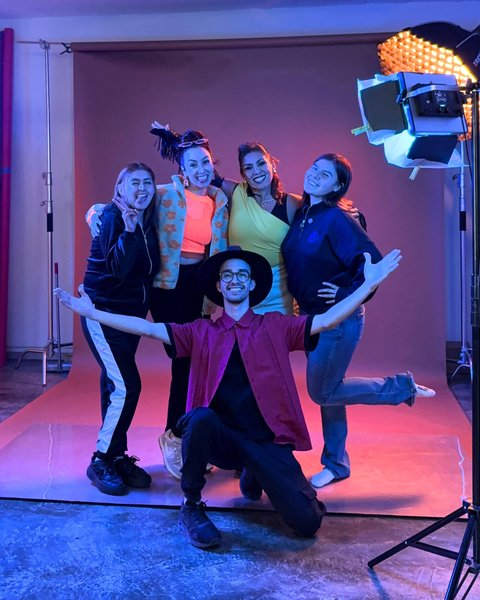
Detrás de cada sesión hay un equipo completo enfocado en una sola cosa: que tú te veas y te sientas como el protagonista que ya eres.
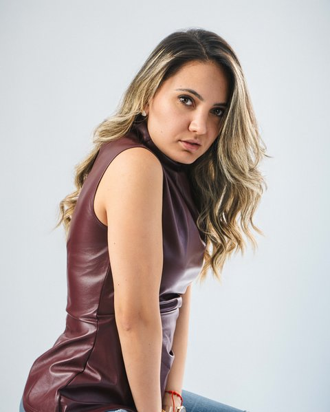
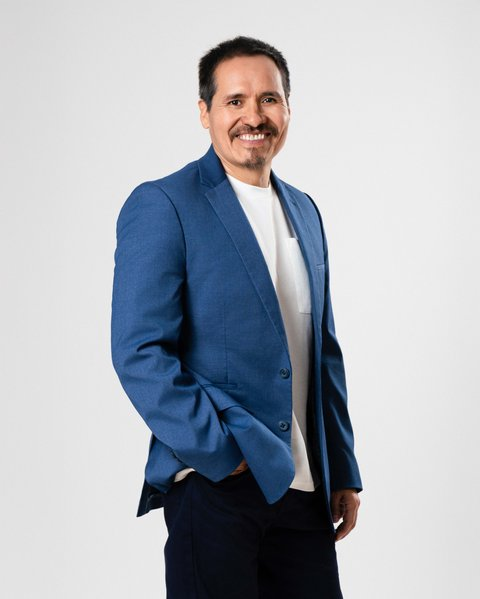
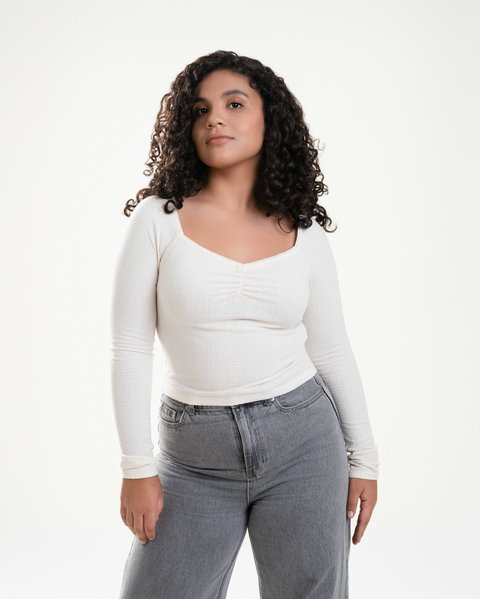
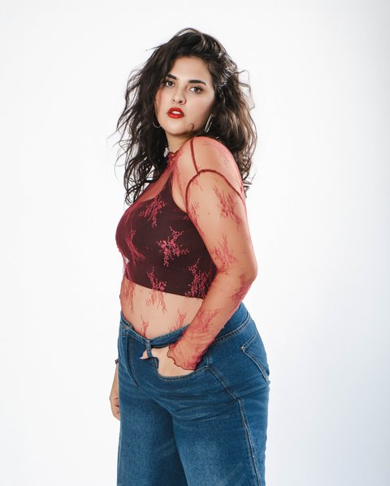
Cada actor sale con un resultado pensado desde su propia historia, hecho a su medida.
Nos conocemos, platicamos tu momento actual como actor, y decidimos juntos cuál es la experiencia que mejor se ajusta a ti.
Antes de la sesión, hablamos de tu historia, tu tipo actoral y hacia dónde quieres apuntar — y armamos el moodboard que va a guiar toda la experiencia.
Dirección emocional y conceptual el día de tu sesión, con looks e intenciones pensadas en mostrar tu mejor versión actoral.
De cientos de tomas, curamos las mejores para ayudarte a elegir; tú decides las definitivas, viéndote en pantalla grande.
Tus fotos llegan optimizadas para cada plataforma — listas para subir a redes o mandar a un casting sin que pierdan calidad.
Con Asesoría METASTAR, hecha a la medida de tu momento: la respuesta a “ya tengo mi book… ¿ahora qué chingados hago?”
Nos conocemos, platicamos tu momento actual como actor, y decidimos juntos cuál es la experiencia que mejor se ajusta a ti.
Antes de la sesión, hablamos de tu historia, tu tipo actoral y hacia dónde quieres apuntar — y armamos el moodboard que va a guiar toda la experiencia.
Dirección emocional y conceptual el día de tu sesión, con looks e intenciones pensadas en mostrar tu mejor versión actoral.
De cientos de tomas, curamos las mejores para ayudarte a elegir; tú decides las definitivas, viéndote en pantalla grande.
Tus fotos llegan optimizadas para cada plataforma — listas para subir a redes o mandar a un casting sin que pierdan calidad.
Con Asesoría METASTAR, hecha a la medida de tu momento: la respuesta a “ya tengo mi book… ¿ahora qué chingados hago?”
Un mes se convierte en seis.
Seis se convierten en dos años.
Aquí nada es de aparador. Cada experiencia se ajusta a dónde estás parado hoy en tu carrera — como un traje a medida.
El precio exacto de tu experiencia se define en tu cafecito con Monty.
Para el actor que recién retoma su carrera y necesita un book profesional para agencias y sus primeros castings.
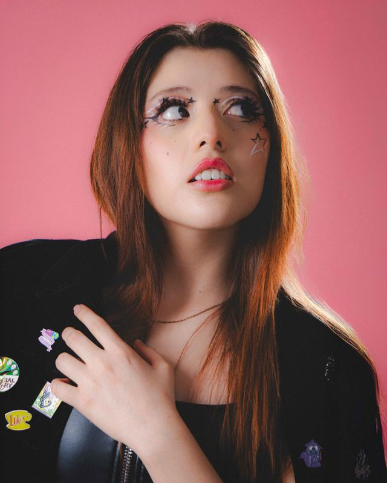
Para el actor con experiencia que necesita relanzar o reposicionar su imagen actoral.
Para el actor construyendo una marca sólida, listo para castings de alto perfil y varios rangos de exposición.
¿Buscas algo que no ves aquí? Lo más probable es que ya lo hayamos resuelto antes. Los extras están en el FAQ ↓


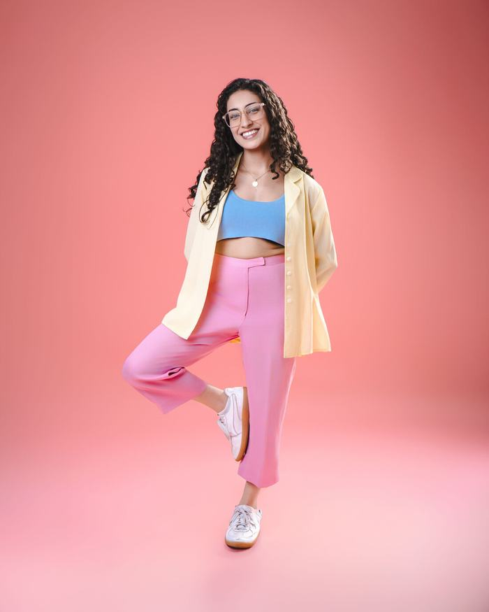
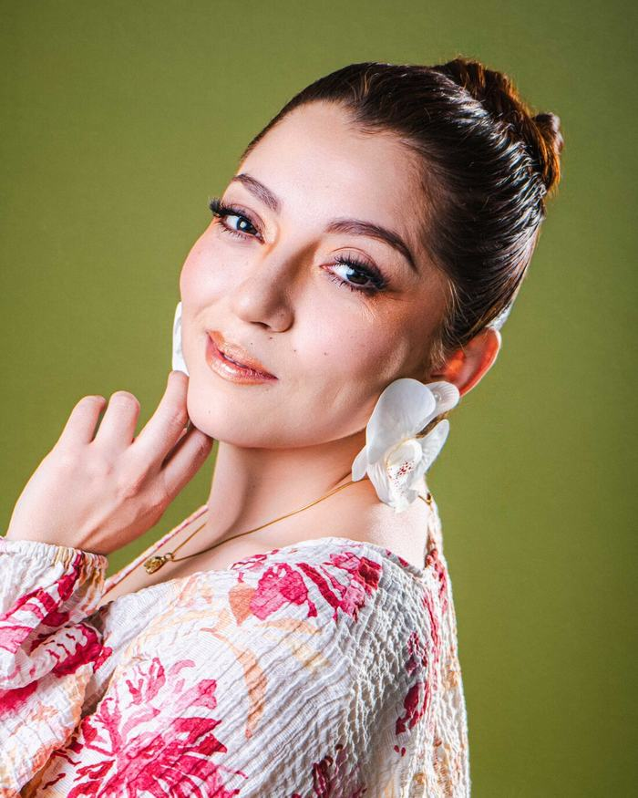


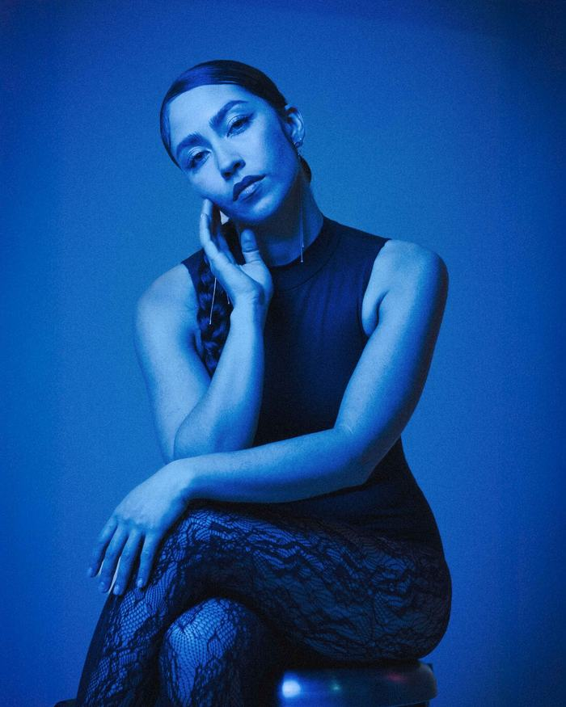


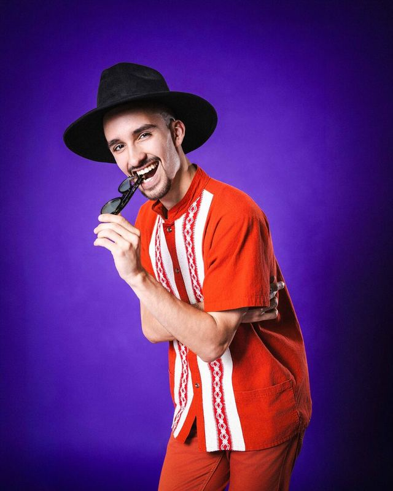
Para el actor que está leyendo esto:
Antes de ser fotógrafo de retrato para actores, dirigí actores en cine — incluso fui director de casting en la ópera prima de un amigo. Ahí noté algo que ningún director enseña: la mayoría actúa desde el “quiero tener la chamba”, sin pararse nunca a cuestionarse ni a voltear a verse a ellos mismos.
Y no era falta de talento.
De esa grieta nació todo mi desmadre: Monty Experience — un proceso diseñado para actores dispuestos a reconectar consigo mismos.
Sé lo que se siente ver tu book y no reconocerte en él. Yo también pasé por ahí.
Por eso no arrancamos con la sesión, arrancamos con una conversación honesta sobre qué hay detrás de lo que quieres lograr — y de ahí personalizamos tu sesión, a tu medida.
Y dirás: normalmente cuando renuevas tu book te queda la misma pregunta — ya tengo mi book, ¿ahora qué chingados hago? El proceso no se queda ahí: cada sesión cierra con un seguimiento, un asesoramiento para trazar la ruta.
Actualmente acompaño a actores que sienten que se quedaron fuera del juego, a volver a competir con una imagen que por fin los represente en cada casting.
Dale play. Súbele al volumen. Esto no lo actué yo.
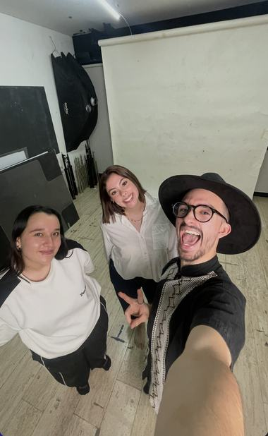
Bri Navarro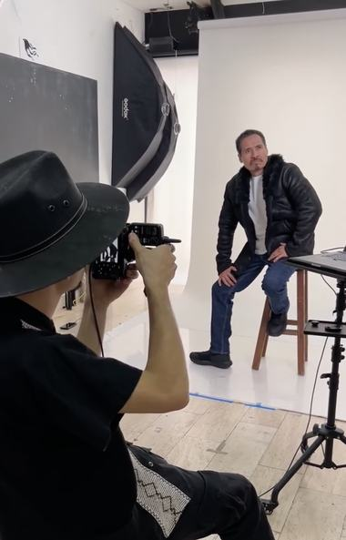
Leonardo Alonzo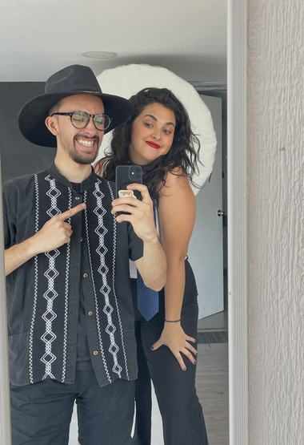
Lupita Medina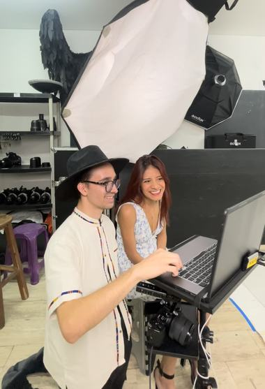
Paty GuzmánEntre 2 y 5 horas, según el paquete. La mayoría se relaja a la primera hora, y ahí es cuando empieza lo bueno.
Sí, de 3 a 6 cambios según tu paquete. No eres una sola nota. Tu book tampoco debería serlo.
No llegas a ese susto: te ves en pantalla mientras tomamos las fotos. Si algo no es tuyo, lo cambiamos ahí, en caliente. A la selección llegas ya sabiendo que sí eres tú.
Incluida, siempre. Sin ella solo te llevas fotos bonitas y la misma pregunta de antes: "ya tengo mi book… ¿y ahora qué?". METASTAR es la respuesta.
De 5 a 15 días hábiles, según el paquete. ¿Traes prisa? Hay entrega al día siguiente con costo extra — para cuando el casting no puede esperar.
Classic, Elite y Fénix cubren el 100% de lo que necesitas para relanzarte. Y para lo que se sale de lo normal, también tenemos solución:
¿Te interesa alguno de estos servicios extra? Escríbeme por WhatsApp y armamos tu experiencia a la medida.
“No hay nada más caro que esforzarte tanto y que nunca sea suficiente.”
Cupos limitados este mes: 8 disponibles.
Culo si no
te descubres.
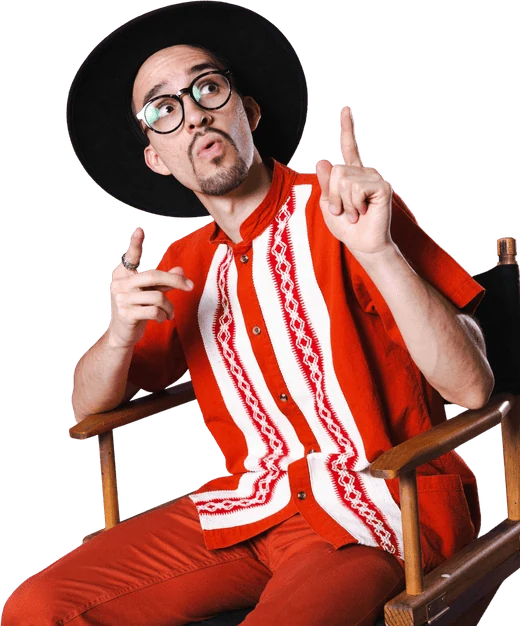
Mándame mensajito por WhatsApp.